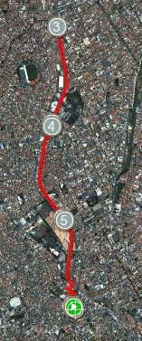
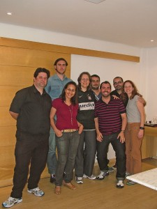

vamo, vamo, vamo…
Posts tagged Testemunhos Alex
Ansiedade
17 years
by Alecão
in Ex-sedentário
Dia anterior ao dia da maratona. Estou com frio na barriga. Estas últimas semanas estão sendo um tobogã emocional. Mas esta semana em particular, procurei levantar minha auto-estima. Passei a me preocupar mais com detalhes do dia-a-dia. Procurando organizar as pequenas bagunças com intuito de organizar os pensamentos.
Já participei de corridas individuais em que os amigos correm um ao lado do outro. Agora é diferente. Estarei sozinho no asfalto, envolto de uma monte de gente. Soa irônico isso.
Mas uma coisa tenho certeza, vou dar o melhor de mim amanhã, respeitando os meus limites é claro. E quero comemorar muito com a equipe blogueiros Taeq depois da chegada o Wiliam.
Quero desejar boa sorte a todos os atletas que vão participar da maratona de revezamento.
Cautela
07 years
by Alecão
in Ex-sedentário
Recentemente estive com uma psicóloga e na sessão ela me indagou:
“Voc√™ conhece os seus limites?”
E eu fiz cara de interrogação e perguntei:
“Como assim limites?”
Ela deu uma gargalhada gostosa e emendou:
“Com certeza voc√™ não conhece seu limites.”
Comecei a rir junto. Com este bate papo divertido acabei percebendo o quanto eu sou negligente com a questão de limites e não estou falando apenas em relação a atividade física. Resultado, fiquei matutando esta ideia após a consulta.
Pedro, um amigo, me chamou para caminhar no dia seguinte a noite, ele também vai participar da maratona de revezamento. Mas no dia seguinte o tempo fechou, ficou frio com uma pequena garoa.
Antes da sessão com a psic√≥loga eu iria caminhar mesmo sob a garoa.¬†Agora o pensamento √© outro: “Não vai piorar a minha gripe? Vai sim!”.¬†Pensei vou ligar para o Pedro. Na mesma hora encontrei um recado no celular com ele desistindo da ideia de caminhar naquele dia, pelo mesmo motivo.
Devemos respeitar os nossos limites e para isso devemos nos questionar se o que está sendo proposto é possível de ser realizado naquele momento. Eu ainda estou aprendendo a lidar com estas situações. Acho que cautela me ajudará a avançar em meus desejos de maneira controlada sem ter surpresas, inclusive dentro do esporte.
Mula de carga
17 years
by Alecão
in Ex-sedentário
Depois do primeiro dia na academia, peguei uma gripe forte (pra complicar um pouco as coisas) e fiquei uma semana de molho. Na primeira vez eu fui bem cedo na academia, antes do trabalho, desta vez eu fui a noite. Estou ainda testando qual horário eu me adapto melhor.
A questão de ir depois do dia de trabalho implica em uma inércia maior, o desejo do corpo é sentar no sofá.
Para aquecer fui para esteira e sem enrolar já parti para uma velocidade de 6,6 Km/h. Depois de 10 minutos a esteira marcava a distância de 1 Km. Parti para a musculação com a ficha das séries na mão. Bem diferente das academias que eu ia no passado em que eu era obrigado a decorar a sequência. Uma vez terminado toda a série voltei para a esteira e programei a velocidade de 6,6 Km/h durante 30 minutos.
Durante os primeiros 15 minutos a corrida estava prazerosa, mas os 15 minutos restantes foram mais complicados, apenas ficava vendo os números no painel da esteira e fazendo contas de cabeça para esquecer a força contra que começava a aparecer em meus pensamentos.
30 minutos, ufa!
Totalizei 3,3 Km. Fiquei muito satisfeito comigo mesmo e tive a certeza que completarei vivo a prova (claro que estou exagerando). Fiz alongamento que é muito necessário e que ultimamente estava deixando de lado.
No vestiário, além de me pesar (sempre faço isso) resolvi pesar a minha mochila, para minha surpresa ela pesa 5 kg. Imaginei-me como um burro de carga, carregando este peso para cima e para baixo.
Nota mental:
Preciso rever as tranqueiras que eu transporto.
Caminhada de 6 Km
17 years
by Alecão
in Ex-sedentário
Planejei hoje fazer um percurso com a mesma dist√¢ncia de minha “perna” na maratona. Sa√≠ de casa disposto mas sem correr para não me esfor√ßar.
Ao chegar em casa e montar o mapa do percurso na Internet, descobri que tinha feito 6 Km, acima da distância que vou percorrer com o tempo de 63 minutos, é um tempo alto, mas apenas caminhei e o melhor, não me cansei.
Isso dá um passo de 10:30 minutos para cada quilômetro. No dia da prova pretendo fazer um passo de 9:30 min para cada Km. E está chegando, já é domingo e ansiedade aumentando. O importante é não surtar.

Primeiro dia na academia
07 years
by Alecão
in Ex-sedentário
Estranho voltar a fazer academia depois de tanto tempo. Eu tenho más lembranças da época que frequentei. A questão é que não me adaptei ao lado social da academia que eu frequentava.
Bem, vamos lá, cheguei na academia e fui muito bem recebido. Fiz o cadastro do dedo e fui pro vestiário. Troquei de roupa e fui para as esteiras. 10 minutinhos de esteira e fui para os aparelhos de musculação.
Aos poucos fui “apresentado” aos aparelhos e minhas s√©ries foram sendo montadas.¬†Sempre duas vezes de quinze, legpress, extensora… A minha s√©rie foi focada nas pernas, mas com direito a bra√ßo tamb√©m.
Imaginei fechar o dia com dores musculares. Mas isso não aconteceu, estou em melhor forma do que eu imaginava.
Mudança de hábito
17 years
by Alecão
in Ex-sedentário
Desde que aceitei o desafio, tenho procurado alterar meus hábitos e sempre para melhor.
A mais importante em minha opinião, é a de encarar obstáculos no dia-a-dia. Como evitar elevadores e escadas rolantes. Quando chego no terminal Sacomã, todos os dias, ao invés de subir pela escadas rolantes, eu encaro mesmo a escadona:

E não é apenas uma, são duas! Sinto minha pulsação quando chego no andar superior. Nos primeiros dias, eram escaladas. Agora não sinto tanto. Passou a fazer parte da rotina.
Outra mudança de hábito foi a de não tomar mais cerveja. Estou já a 2 meses sem beber e nem sinto falta. Parei também com o refrigerante. Este foi difícil. Não sabia que era dependente. Tomava todo dia no almoço. As 2 primeiras semanas tinha desejos diários, minha boca salivava ao ver o refrigerante. Mas consegui superar, hoje não sinto falta.
Sinto que estou conseguindo me transformar e fico muito satisfeito com isso.
Super Equipe
07 years
by Alecão
in Ex-sedentário
Esta quarta reunimos a Equipe TAEQ e pude conhecer pessoalmente aqueles com quais eu estarei revezando no dia da maratona. Foi sensacional encontrar pessoas alegres e entusiasmadas com o evento. É a certeza de que no domingo da maratona terei mais que uma superação pessoal, terei o prazer de ajudar um grupo.
Interessante ver tamb√©m como o grupo √© heterog√™neo e como a corrida coloca pessoas diferentes dentro do mesmo “buraco”.
A ordem do revezamento foi estabelecida e eu fiquei com a sexta perna. Vou ter que passar bastante protetor solar por conta do sol.
Não vejo a hora da maratona chegar.
Domingo é dia de parque
17 years
by Alecão
in Ex-sedentário
Domingo é o dia oficial do passeio no parque, todo domingo acordo cedo com a mulher e filhos e vou para algum parque. É muito legal o ambiente e correr atrás das crianças tem atualmente um significado especial. Não faz muito tempo que achava ruim ter que ir ao parque e ficava apenas sentado olhando em volta. Apesar do pouco treino, da torção no tornozelo, da gripe (chega), tenho uma disposição bem maior.
Este sábado que passou, eu consertei as bicicletas das crianças, matei um pouco a saudade de quando montava e desmontava minha bike. Este preparativo é porque meu primo me convidou para ir no parque Vila Lobos no domingo. Era para comemorar seu aniversário e de um jeito diferente. Ele convidou os seus incentivadores no esporte para cantar parabéns. Achei muito inusitado a princípio, mas depois adorei a ideia.
Claudio (meu primo) √© meu grande incentivador, vinha sofrendo com¬†apneia¬†no sono e já conseguiu superar gra√ßas aos treinos quase diários.¬†Ele que me mostrou o lado bom da corrida, das amizades, dos incentivos sem compromissos daqueles que poderiam esnobar… Inclusive,¬†Isso √© o que mais me surpreendeu, justamente receber incentivo e apoio daqueles que parecem estar eu outro patamar. Neste domingo mesmo, no aniversário do Claudio, ele recebeu a visita da Monica Otero que completou a ultramaratona de Badwater.¬†Incr√≠vel mulher que tem no curr√≠culo uma hist√≥ria de supera√ß√£o de c√¢ncer e que consegue feitos que para mim são inimagináveis.¬†E estava lá, simples e incentivando-nos.
Este domingo ficou na memória como algo que mostra que a amizade e auto-confiança são essenciais. Amizade e apreço que tenho pelo meu grande amigo, incentivador e que pela ironia do destino ainda é meu primo.
Parabéns Claudião.
Ainda bem
27 years
by Alecão
in Ex-sedentário
Tive a infelicidade de torcer o pé no ônibus e doeu muito. Preocupado fui ao pronto-socorro, pelo raio-x, o médico me acalmou dizendo que nada havia quebrado e que era apenas uma luxação.
Antes do médico me acalmar eu fiquei bem preocupado, já pensou deixar a equipe na mão.
Agora estou tendo que me torturar com sacos de gelos de hora em hora para que a recuperação seja mais rápida.
E como diz meu primo: Vamo, vamo, vamo…
Exames
07 years
by Alecão
in Ex-sedentário
Esta semana realizei meu check-up… Fiz o teste ergom√©trico e os exames laboratoriais.
Me surpreendi no teste da esteira. Pois consegui não cair üôÇ
Brincadeiras a parte, foi muito bom saber que em esforço máximo eu aguentei bastante tempo.
E o melhor, o resultado do exame não constou nenhuma anomalia.
Já o teste laboratorial, a coisa não vai bem. Os níveis relacionados a gordura estão altos, acima dos limites que o próprio laboratório expõe no resultado.
Mas isso não é novidade, tenho estes índices elevados há algum tempo. Sei que é por causa do meu sobrepeso e apenas emagrecendo é que eu volto aos índices normais.
E com certeza é pelo esporte que conseguirei isso.
A maratona de revezamento é apenas o início. Me segurem!
.jpg "DSC01712 (1024x576)")
.jpg "DSC01743 (1024x576)")
.jpg "DSC01748 (576x1024)")
.jpg "DSC01769 (1024x576)")
.jpg "DSC01822 (1024x576)")
.jpg "DSC01859 (1024x576)")

.jpg "IMG_7302 (768x1024)")


{kind=link}
√öltimos comentários